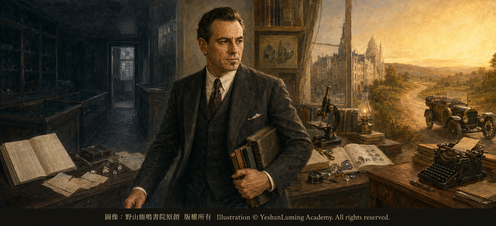
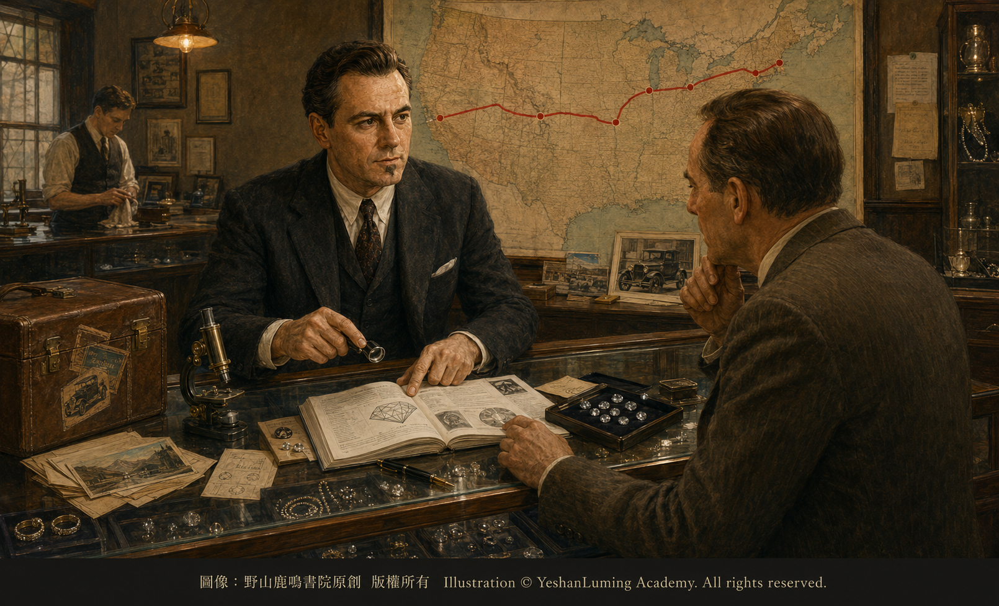

GIA創始人的勵志故事·羅伯特·希普利的逆風傳奇The Inspiring Story of GIA’s Founder · Robert Shipley’s Triumph over Adversity
The World of Gemstones · Diamond SeriesThe Inspiring Story of GIA’s Founder · Robert Shipley’s Triumph over Adversity
The World of Gemstones · Diamond SeriesGIA創始人的勵志故事·羅伯特·希普利的逆風傳奇
寶石世界·鑽石篇
寶石世界·鑽石篇（120）The World of Gemstones · Diamond Series (120)
在今天的珠寶市場上，人們購買重要鑽石時，經常會要求查看一份GIA鑽石分級報告。這份看似普通的文件，背後代表的是一整套寶石學知識、分級程序和實驗室研究。
然而，建立GIA的並不是一個財力雄厚的珠寶財團，也不是一群一開始就掌握尖端科學的學者。
它的創始人，是一位在人到中年時經歷婚姻破裂、事業失敗和專業羞愧，卻在谷底中重新學習，最後推動美國珠寶業走向現代化的人。
他就是羅伯特·M·希普利（Robert M. Shipley）。
希普利於1887年出生在美國密蘇里州，年輕時進入珠寶行業，後來在堪薩斯州威奇托成為一名零售珠寶商。
他具有很強的經商能力，也善於與顧客溝通。在當時的威奇托，他逐漸建立起成功珠寶商的形象，並把自己看成一位熟悉鑽石與寶石的專家。
但是，20世紀初期的美國珠寶業，仍然缺少系統的寶石學教育。許多珠寶商的知識主要來自商業經驗、供應商介紹與師徒傳承。即使經營多年，也未必真正理解寶石的礦物性質、光學特徵和科學鑑別方法。
希普利也不例外。
根據GIA保存的傳記資料，他曾經在面對顧客的專業問題時，暴露出自己缺乏系統訓練。那些難堪的經歷，使他不得不承認：自己雖然會經營珠寶，卻沒有真正掌握寶石學，這給他帶來了強烈的專業羞愧感。
他開始意識到，一個珠寶商如果缺乏專業知識，即使沒有故意欺騙顧客，也可能因為無知而作出錯誤判斷，把品質與實際描述不符的寶石賣給信任自己的人。
這種發現，對希普利是一次沉重打擊，卻也成為他後來改變人生和行業的起點。
在今天的珠寶市場上，人們購買重要鑽石時，經常會要求查看一份GIA鑽石分級報告。這份看似普通的文件，背後代表的是一整套寶石學知識、分級程序和實驗室研究。
然而，建立GIA的並不是一個財力雄厚的珠寶財團，也不是一群一開始就掌握尖端科學的學者。
它的創始人，是一位在人到中年時經歷婚姻破裂、事業失敗和專業羞愧，卻在谷底中重新學習，最後推動美國珠寶業走向現代化的人。
他就是羅伯特·M·希普利（Robert M. Shipley）。
希普利於1887年出生在美國密蘇里州，年輕時進入珠寶行業，後來在堪薩斯州威奇托成為一名零售珠寶商。
他具有很強的經商能力，也善於與顧客溝通。在當時的威奇托，他逐漸建立起成功珠寶商的形象，並把自己看成一位熟悉鑽石與寶石的專家。
但是，20世紀初期的美國珠寶業，仍然缺少系統的寶石學教育。許多珠寶商的知識主要來自商業經驗、供應商介紹與師徒傳承。即使經營多年，也未必真正理解寶石的礦物性質、光學特徵和科學鑑別方法。
希普利也不例外。
根據GIA保存的傳記資料，他曾經在面對顧客的專業問題時，暴露出自己缺乏系統訓練。那些難堪的經歷，使他不得不承認：自己雖然會經營珠寶，卻沒有真正掌握寶石學，這給他帶來了強烈的專業羞愧感。
他開始意識到，一個珠寶商如果缺乏專業知識，即使沒有故意欺騙顧客，也可能因為無知而作出錯誤判斷，把品質與實際描述不符的寶石賣給信任自己的人。
這種發現，對希普利是一次沉重打擊，卻也成為他後來改變人生和行業的起點。
命運並沒有立刻給他重新開始的機會，20世紀20年代中期，離婚與事業失敗接連發生。希普利失去了原有的珠寶事業，生活與身分都陷入谷底。
一個曾經自信而成功的珠寶商，忽然發現自己的事業、家庭與專業形象，都需要重新建立。他離開美國，前往巴黎學習藝術，試圖為自己尋找另一種生活。
正是在歐洲，他遇見了後來成為第二任妻子與終身事業夥伴的碧翠絲·貝爾（Beatrice Bell）。
碧翠絲幫助希普利進入新的社交和文化環境，也使他有機會從事博物館講解工作。這個經歷讓他重新發現，自己不僅喜歡寶石，也具有向別人講解知識的能力。
在歐洲期間，希普利接觸到英國金匠協會，也就是Great Britain’s National Association of Goldsmiths開設的寶石學函授課程。他報名學習這些課程，開始系統接觸礦物學、光學、寶石性質與鑑別方法。
對於年輕學生來說，重新學習或許並不稀奇；但是此時的希普利已經人到中年。他必須首先承認過去的知識不足，然後從最基礎的內容重新學起。這需要的不只是時間，更需要放下自尊的勇氣。
完成學習以後，希普利終於明白，珠寶商不能只依靠銷售經驗和商業直覺。要正確理解一顆寶石，必須觀察它的物理性質、光學反應與內部特徵，並使用能夠被重複和驗證的方法作出判斷。
更重要的是，他意識到，美國成千上萬名珠寶商，可能正面對著與他過去相同的問題。他們每天都在買賣寶石，卻沒有地方接受系統的寶石學教育。
1929年前後，希普利回到美國。此時，美國即將進入經濟大蕭條。珠寶不是生活必需品，市場信心下降，許多商家經營困難，消費者也更加謹慎。
在這樣的年代創辦寶石學教育機構，看起來並不是一個容易成功的選擇。但是希普利認為，越是在市場失去信任的時候，行業越需要知識與誠信。
他沒有把教育看成珠寶業繁榮以後的奢侈品，而把它看成重建行業信任的基礎。1930年，希普利開始在南加州講授寶石學課程。隨後，他繼續整理教材，推廣面向珠寶從業者的函授教育。
1931年，他與碧翠絲在洛杉磯的一間公寓中，正式創立Gemological Institute of America，也就是美國寶石學院。
最初的GIA，沒有宏偉校舍，也沒有龐大實驗室。它只有極為有限的資金、簡單的辦公條件、正在編寫的課程，以及兩個人改變珠寶行業的信念。
根據後來行業史料的記載，為了籌措早期工作所需的費用，希普利曾將自己的一枚鑽石與祖母綠戒指典當了85美元，用來購買二手汽車和打字機。
汽車使他能夠到美國各地拜訪珠寶商，打字機則用來編寫課程、書信和教學材料。這兩件普通工具，成為GIA早期傳播寶石學知識的重要裝備。
希普利駕駛二手汽車，長途穿行於美國各地，逐家拜訪珠寶店，向店主說明為什麼珠寶商需要學習寶石學，許多人最初並不理解他的想法。

Click to enlarge
一些經營多年的珠寶商相信自己的經驗已經足夠，不願意承認還需要重新學習；另一些人則認為，在經濟大蕭條時期花錢參加課程毫無必要。希普利必須一次又一次解釋：專業知識不是對珠寶商經驗的否定，而是幫助整個行業獲得消費者長期信任的基礎。
據後來的行業記錄，他在推廣課程最繁忙的時期，每年行程可達約25,000英里，先後用壞多輛二手汽車。
白天，他拜訪珠寶商，講授寶石知識，爭取學生；晚上，他在旅館中編寫課程、處理通信和批改作業。
而在他長時間外出奔波時，碧翠絲留在洛杉磯主持GIA的日常工作。她管理辦公室、處理帳目、聯絡學生、整理課程，也在資源極其有限的情況下維持這所新機構的運轉。
因此，GIA雖然由希普利創立，卻從一開始就是夫妻共同承擔的一項事業。隨著越來越多珠寶商開始學習寶石學，希普利的理想逐漸得到行業回應。
1934年，他創立American Gem Society，也就是美國寶石學會，希望把專業知識與商業道德結合起來，使受過訓練並遵守誠信原則的珠寶商能夠獲得消費者信任。
同一年，他還創辦GIA的專業期刊《Gems & Gemology》。寶石學知識從此不只存在於課程中，也開始通過專業期刊被記錄、討論和傳播。
希普利及其同事還推動寶石鑑定儀器的發展。顯微鏡、折射儀和其他設備，逐漸成為現代寶石學觀察與測試的重要工具。
他的兒子羅伯特·希普利二世也參與了GIA早期儀器與技術工作，為寶石學儀器的發展作出貢獻。
但是，現代鑽石分級體系並不是由希普利一個人在某一天突然完成的。希普利最重要的貢獻，是提出教育珠寶行業的理想，並以Carat、Color、Clarity和Cut這四個C，幫助學生理解鑽石品質的主要因素。
後來加入GIA的理查德·T·利迪寇特及其同事，在這一基礎上繼續研究分級術語、尺度與觀察程序。
1952年，希普利退休，利迪寇特接任GIA領導工作。1953年，GIA在利迪寇特主持下建立現代國際鑽石分級體系，使希普利推廣的4C概念，獲得更加明確而一致的等級、術語與操作方法。
隨後，GIA開始出具現代鑽石分級報告，逐漸成為國際珠寶行業描述鑽石品質的重要依據。
因此，希普利與利迪寇特在GIA歷史中承擔著彼此銜接、不可替代的角色。希普利點燃了教育與改革的火種；利迪寇特及其團隊，則把這種理想發展成更加嚴密的現代分級體系。
希普利於1978年去世，回顧他的一生，最令人敬佩的，並不是他從來沒有失敗，而是他能夠正視失敗。
他曾經因為缺乏知識而感到羞愧，也曾經失去婚姻與事業。但他沒有用謊言掩蓋自己的無知，也沒有讓人生谷底成為永久的終點。他選擇重新學習，並把個人的缺憾轉化成改變整個行業的動力。
他創立GIA，不是因為自己一開始就是最有學問的寶石專家，恰恰是因為他曾經深刻體會過無知的危險。
也許，這才是希普利故事最具有力量的地方。一個人真正的專業尊嚴，不在於永遠不犯錯誤，而在於發現錯誤以後，是否願意承認、學習和改變。
希普利用後半生證明，一個人在四十歲左右重新出發，不但可以改變自己的命運，也可能改變一個古老行業的未來。
他把曾經令自己痛苦的專業羞愧，變成推動珠寶業走向知識、科學與誠信的力量。
這就是羅伯特·M·希普利的逆風傳奇。
（未完待續）
In today’s jewelry market, people purchasing an important diamond will often ask to see a GIA Diamond Grading Report. Behind this seemingly ordinary document lies an entire system of gemological knowledge, grading procedures, and laboratory research.
Yet GIA was founded neither by a wealthy jewelry conglomerate nor by a group of scholars who had possessed advanced scientific knowledge from the beginning.
Its founder was a man who, in middle age, endured a broken marriage, business failure, and profound professional shame, but who returned to study at the lowest point of his life and ultimately helped lead the American jewelry industry into the modern age. His name was Robert M. Shipley.
Shipley was born in Missouri in 1887. As a young man, he entered the jewelry trade and later became a retail jeweler in Wichita, Kansas.
He possessed strong business instincts and communicated well with customers. In Wichita, he gradually established the image of a successful jeweler and regarded himself as an expert in diamonds and gems.
In the early twentieth century, however, the American jewelry industry still lacked systematic gemological education. Most jewelers acquired their knowledge through business experience, information supplied by vendors, and master-apprentice traditions. Even after many years in the trade, they did not necessarily understand the mineralogical properties, optical characteristics, or scientific identification of gems.
Shipley was no exception.
According to biographical records preserved by GIA, there were occasions when customers asked him technical questions and exposed the absence of systematic training behind his confident professional image. Those embarrassing experiences forced him to admit that, although he knew how to run a jewelry business, he had never truly mastered gemology. The realization filled him with a powerful sense of professional shame.
He began to understand that when a jeweler lacked professional knowledge, even without intending to deceive anyone, ignorance could still lead to mistaken judgments—and to selling trusted customers gems whose actual quality did not match the way they had been described.
This discovery struck Shipley deeply, but it also became the starting point from which he would later transform both his own life and the industry around him.
In today’s jewelry market, people purchasing an important diamond will often ask to see a GIA Diamond Grading Report. Behind this seemingly ordinary document lies an entire system of gemological knowledge, grading procedures, and laboratory research.
Yet GIA was founded neither by a wealthy jewelry conglomerate nor by a group of scholars who had possessed advanced scientific knowledge from the beginning.
Its founder was a man who, in middle age, endured a broken marriage, business failure, and profound professional shame, but who returned to study at the lowest point of his life and ultimately helped lead the American jewelry industry into the modern age. His name was Robert M. Shipley.
Shipley was born in Missouri in 1887. As a young man, he entered the jewelry trade and later became a retail jeweler in Wichita, Kansas.
He possessed strong business instincts and communicated well with customers. In Wichita, he gradually established the image of a successful jeweler and regarded himself as an expert in diamonds and gems.
In the early twentieth century, however, the American jewelry industry still lacked systematic gemological education. Most jewelers acquired their knowledge through business experience, information supplied by vendors, and master-apprentice traditions. Even after many years in the trade, they did not necessarily understand the mineralogical properties, optical characteristics, or scientific identification of gems.
Shipley was no exception.
According to biographical records preserved by GIA, there were occasions when customers asked him technical questions and exposed the absence of systematic training behind his confident professional image. Those embarrassing experiences forced him to admit that, although he knew how to run a jewelry business, he had never truly mastered gemology. The realization filled him with a powerful sense of professional shame.
He began to understand that when a jeweler lacked professional knowledge, even without intending to deceive anyone, ignorance could still lead to mistaken judgments—and to selling trusted customers gems whose actual quality did not match the way they had been described.
This discovery struck Shipley deeply, but it also became the starting point from which he would later transform both his own life and the industry around him.
Fate did not immediately offer him a chance to begin again. In the mid-1920s, divorce and business failure followed one another. Shipley lost the jewelry enterprise he had built, and both his life and his sense of identity sank to their lowest point.
A once-confident and successful jeweler suddenly found that his career, his family, and his professional reputation all had to be rebuilt. He left the United States for Paris to study art, hoping to find another way of life.
It was in Europe that he met Beatrice Bell, who would become his second wife and lifelong partner in his work.
Beatrice helped Shipley enter a new social and cultural world and opened the way for him to work as a museum lecturer. Through that experience, he rediscovered that he not only loved gems, but also possessed the ability to explain knowledge to others.
While in Europe, Shipley encountered the gemological correspondence courses offered by Great Britain’s National Association of Goldsmiths. He enrolled in the courses and began the systematic study of mineralogy, optics, gem properties, and identification methods.
For a young student, returning to study might not have been unusual. By this time, however, Shipley had already reached middle age. He first had to acknowledge the limitations of his earlier knowledge and then begin again with the most fundamental material. This required more than time; it required the courage to set aside his pride.
After completing his studies, Shipley finally understood that jewelers could not rely solely upon sales experience and commercial instinct. To understand a gem correctly, one had to observe its physical properties, optical reactions, and internal features, and then make judgments through methods that could be repeated and verified.
More importantly, he realized that thousands of American jewelers might be facing the same problem he once had. They bought and sold gems every day, yet had nowhere to receive systematic gemological education.
Around 1929, Shipley returned to the United States. America was approaching the Great Depression. Jewelry was not a necessity of life, confidence in the market was declining, many businesses were struggling, and consumers were becoming increasingly cautious.
To establish a gemological educational institution in such an era hardly seemed an easy path to success. Shipley believed, however, that the more a market lost the public’s trust, the more urgently the industry needed knowledge and integrity.
He did not regard education as a luxury to be pursued only after the jewelry industry had prospered. He saw it as the foundation upon which the industry’s credibility could be rebuilt. In 1930, Shipley began teaching gemology courses in Southern California. He then continued preparing instructional materials and promoting correspondence education for members of the jewelry trade.
In 1931, he and Beatrice formally founded the Gemological Institute of America in an apartment in Los Angeles.
The earliest GIA had neither a magnificent campus nor a vast laboratory. It possessed only extremely limited funds, modest office facilities, courses still being written, and the conviction of two people who believed they could change the jewelry industry.
According to later accounts from the trade, Shipley raised some of the money needed for this early work by pawning a diamond-and-emerald ring for eighty-five dollars, which he used to purchase a secondhand automobile and a typewriter.
The automobile enabled him to visit jewelers across the United States, while the typewriter allowed him to prepare courses, letters, and teaching materials. These two ordinary tools became essential equipment in GIA’s earliest campaign to spread gemological knowledge.
Shipley drove his secondhand car across great distances throughout the United States, visiting jewelry stores one by one and explaining to their owners why jewelers needed to study gemology. At first, many people did not understand his vision.
Click to enlarge
Some jewelers who had spent many years in business believed their experience was already sufficient and were unwilling to admit that they still needed to learn. Others considered it pointless to spend money on courses during the Great Depression. Shipley had to explain again and again that professional knowledge did not invalidate a jeweler’s experience; it provided the foundation upon which the entire industry could earn the lasting confidence of consumers.
According to later industry records, during the busiest years of promoting his courses, Shipley traveled approximately 25,000 miles annually and wore out a succession of used cars.
By day, he visited jewelers, taught gemological knowledge, and recruited students. By night, he wrote courses, handled correspondence, and graded assignments in hotel rooms.
While he spent long periods traveling, Beatrice remained in Los Angeles and directed GIA’s daily operations. She managed the office, kept the accounts, corresponded with students, organized courses, and sustained the new institution despite its extremely limited resources.
Thus, although GIA was founded by Shipley, it was from the beginning an undertaking carried by husband and wife together. As more and more jewelers began to study gemology, Shipley’s vision gradually won a response from the industry.
In 1934, he founded the American Gem Society, hoping to unite professional knowledge with business ethics so that trained jewelers who upheld principles of integrity could earn the confidence of consumers.
That same year, he also founded GIA’s professional journal, Gems & Gemology. Gemological knowledge was no longer confined to courses, but began to be recorded, discussed, and disseminated through a professional publication.
Shipley and his colleagues also advanced the development of gemological instruments. Microscopes, refractometers, and other equipment gradually became essential tools for observation and testing in modern gemology.
His son, Robert Shipley Jr., also participated in GIA’s early work with instruments and technology, contributing to the development of gemological equipment.
The modern diamond grading system, however, was not suddenly completed by Shipley alone on a single day. His greatest contribution was to establish the ideal of educating the jewelry industry and to use the four Cs—Carat, Color, Clarity, and Cut—to help students understand the principal factors of diamond quality.
Richard T. Liddicoat, who later joined GIA, and his colleagues continued from this foundation, studying grading terminology, scales, and observation procedures.
Shipley retired in 1952, and Liddicoat succeeded him in GIA’s leadership. In 1953, under Liddicoat’s direction, GIA established the modern international diamond grading system, giving the 4Cs promoted by Shipley more clearly defined and consistent grades, terminology, and operating procedures.
GIA subsequently began issuing modern diamond grading reports, which gradually became an important basis for describing diamond quality throughout the international jewelry industry.
Shipley and Liddicoat therefore played distinct, successive, and irreplaceable roles in GIA’s history. Shipley kindled the flame of education and reform; Liddicoat and his team developed that vision into a more rigorous modern grading system.
Shipley died in 1978. Looking back upon his life, what deserves the greatest admiration is not that he never failed, but that he possessed the courage to face failure.
He had felt shame over his lack of knowledge, and he had lost both his marriage and his business. Yet he did not conceal his ignorance with falsehoods, nor did he allow the lowest point of his life to become its permanent conclusion. He chose to return to study and transformed his personal shortcomings into the driving force for changing an entire industry.
Shipley founded GIA not because he had been the most learned gem expert from the beginning, but precisely because he had understood, at a deeply personal level, the dangers of ignorance.
Perhaps this is what gives Shipley’s story its greatest power. True professional dignity does not lie in never making a mistake, but in whether one is willing to acknowledge, study, and change after discovering that mistake.
Through the second half of his life, Shipley proved that a person beginning again at around the age of forty can not only transform his own destiny, but may also change the future of an ancient industry.
He transformed the professional shame that had once caused him such pain into a force that moved the jewelry industry toward knowledge, science, and integrity.
This is the story of Robert M. Shipley’s triumph over adversity.
(To be continued)